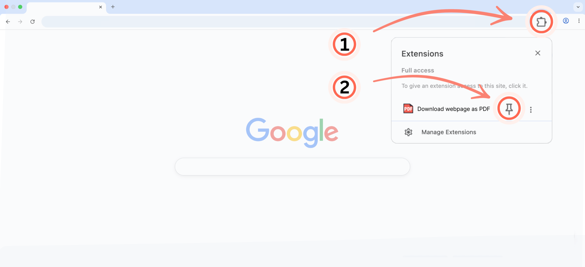

‘Webpagina opslaan als PDF’ is geïnstalleerd! 🎉 Zo ga je aan de slag.
Open het menu Extensies (1) rechtsboven in Chrome. Klik vervolgens op het speldpictogram (2) naast ‘Webpagina opslaan als PDF’.

Klaar! Klik op het PDF-pictogram (3) op de werkbalk wanneer je een webpagina wilt opslaan.